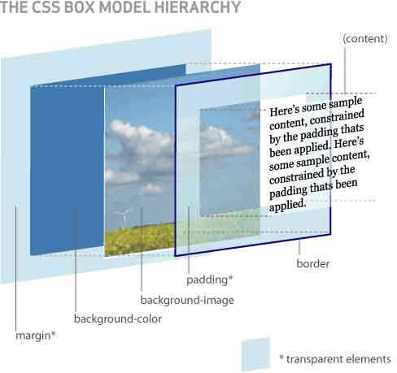

前言
因为我最开始是搞服务器端代码的，刚开始根本不看好CSS，甚至认为js抄一抄改一改就完了！由于这种错误的认识，所以CSS功底很水，曾经认为将图片做成页面是件很神奇的事情。
时至今日，我能轻易将一张图形成页面，我还能用js写出简单的插件，但有一个是没有变化的：
我依旧认为CSS很神奇！很难，比js难......
一方面是自己布局的项目经验不足，另一方面就是没有经过系统的学习，所以这块仍然是我的短板，是问题就需要突破，我不行但有人行！
我最近领悟了一个学习方法，针对某个问题，搜集几篇高质量文章阅读，然后吸收，做实验，形成文章！这样的学习效果我感觉针对还行！
所以这次用到我的短板CSS上试试！
引用资料
css中padding、margin两个重要属性的详细介绍及举例说明
隆重介绍·张鑫旭
世界上有那么一种人，属于他不认识我，但我认识他，他影响着我，但他还是不认识我！其中张鑫旭就是这样一个人！
当我前段时间比较迷茫时，不经意间看见了他的博客，于是我便深深的爱上了他！因为从他的行文中，我感受到了我丢失的专注与细心，特别是他一句话点醒了我，我才为自己设立目标“两年成为国内优秀前端工程师”的目标，所以在此感谢旭哥，真乃指路明灯啊！
在此推荐其博客：http://www.zhangxinxu.com
盒模型 Box Model
要说margin，必定牵扯到盒模型，我这里不要脸的偷了两个图：


请大家注意看第一张图！这张图是我见过最棒的一张图了，他可以很好的解释块级元素中margin、padding、background等的关系，画图者神人也！
Margin是什么？
CSS边距属性定义元素周围的空间。通过使用单独的属性，可以对上右下左外边距进行设置。
元素周围生成的额外空白区，该空白区是指其它元素不能出现且父元素背景可见区域
上面的定义怎么读怎么绕口。。。但基本也就是这个意思，其实margin就是用来将元素隔开罢了。
现在我们来看看margin会为我们的网页带来些什么问题呢？
IE6双边距问题
产生条件：块级元素+float+margin
比如：当给父元素内第一个浮动元素设置margin-left（元素float:left）或margin-right（元素float:right）时margin加倍。
先上代码：
1 <html xmlns="http://www.w3.org/1999/xhtml"> 2 <head> 3 <title></title> 4 <style type="text/css"> 5 .p { border: 1px solid black;} 6 .test { background: gray; margin: 10px; float: left;} 7 </style> 8 </head> 9 <body> 10 <div class="p"> 11 <div class="test"> 12 margin 13 </div> 14 <div style=" clear: both;"></div> 15 </div> 16 </body> 17 </html>
本想简简单单做个试验就算了，结果一float我父级元素就“坍塌”了，这里还必须处理一番呢。
汗！由于我没有IE6，这里看不到bug图呢。。。这里只好又偷图了。。。
大概是以上样子，我们来看看各位大哥是怎么样解决的呢？
其中一位提到了原因：
块级元素设置浮动并对其设置外边距，就会出现这种情况，这种情况只会是第一个元素，后面就不会出现，原因是：
浮动时相对的，第一个元素对应于父对象而后对应于第一个对象，所以只有第一个会出问题。
为元素设置display: inline 可以解决这个问题，是因为inline或者inline-block元素不存在双边距问题。
而float: left可以让inline元素haslayout引发布局，支持高宽
PS：我感觉这个不像是原因而是解决的办法了。。。
最后我两位大哥对这个的解散都是一样的，其中旭哥稍微提了下少用float，这个问题便不了了之啦。。。
margin重叠问题
margin有这样一个属性，水平元素的margin是不会重合的，但是上下元素会发生重合，并且取较大者。
在漂浮框和其它框之间的垂直边距不重合//ie可以，其它不行
绝对定位框与相对定位框边距不重合//貌似也有问题
对以上问题，我有点迷糊......
这里要提到的是一个实际遇到的问题：
1 <html xmlns="http://www.w3.org/1999/xhtml"> 2 <head> 3 <title></title> 4 <style type="text/css"> 5 body { background: #ECECEC; } 6 .outer { background: white; border: 1px solid #CCCCCC; width: 300px; } 7 .inner { margin: 10px; padding: 8px; background: none repeat scroll 0 0 #1C87D5; color: white;} 8 </style> 9 </head> 10 <body> 11 <div class="outer"> 12 <h1 class="inner"> 13 来个测试走</h1> 14 </div> 15 </body> 16 </html>

若是我们将代码做一点改变：“将外层元素border”去掉；那么。。

大家发现，一旦缺少屏障，里面margin: 10px便没了。。。
所以我在想是不是可以直接给父元素设置一个padding: 1px便解决问题了
IE6 漂浮元素3px间距bug
当一个元素浮动，然后一个不浮动上浮与之靠近会出现3px的bug。
可以使用一起浮动，或者hack_margin-left: -3px解决，
这个也无法测试了。
结语
今日阅读就到这里，下次我们接着学习吧！！！